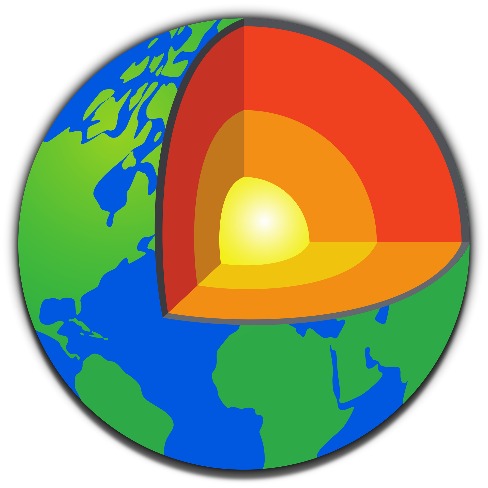
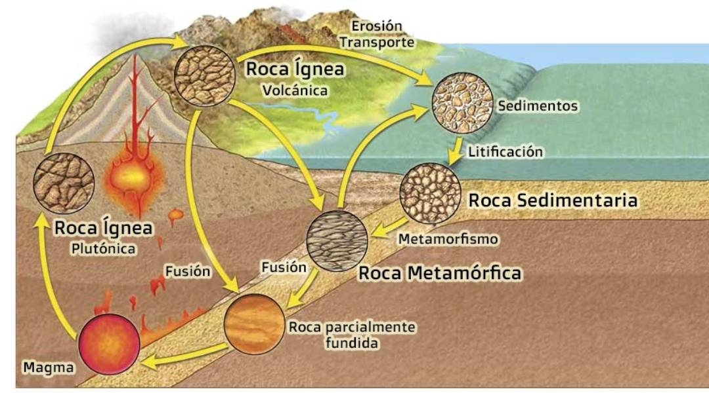
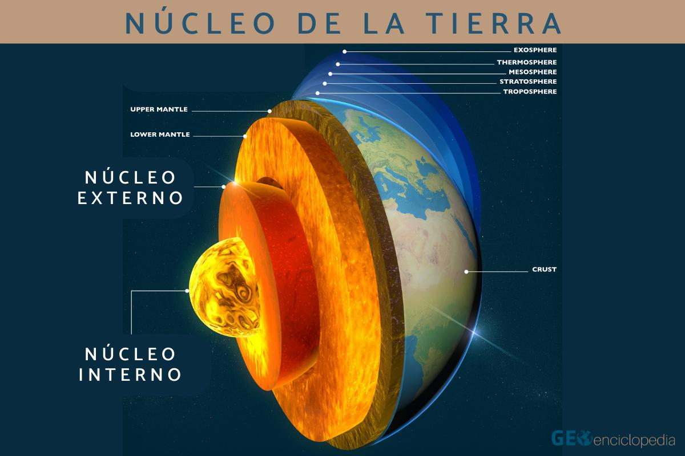
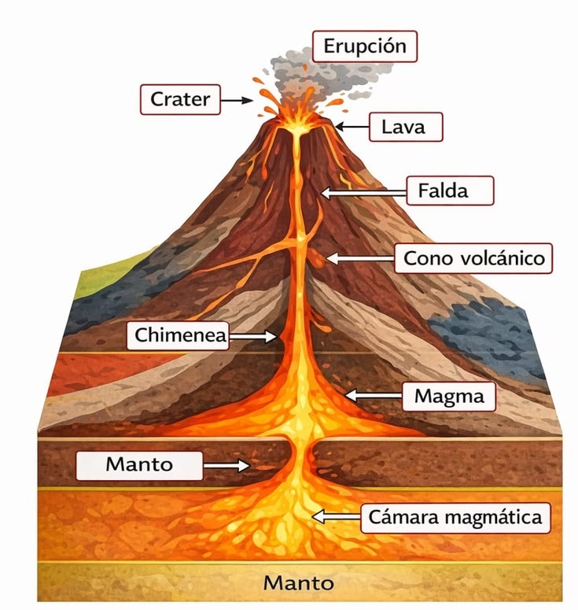
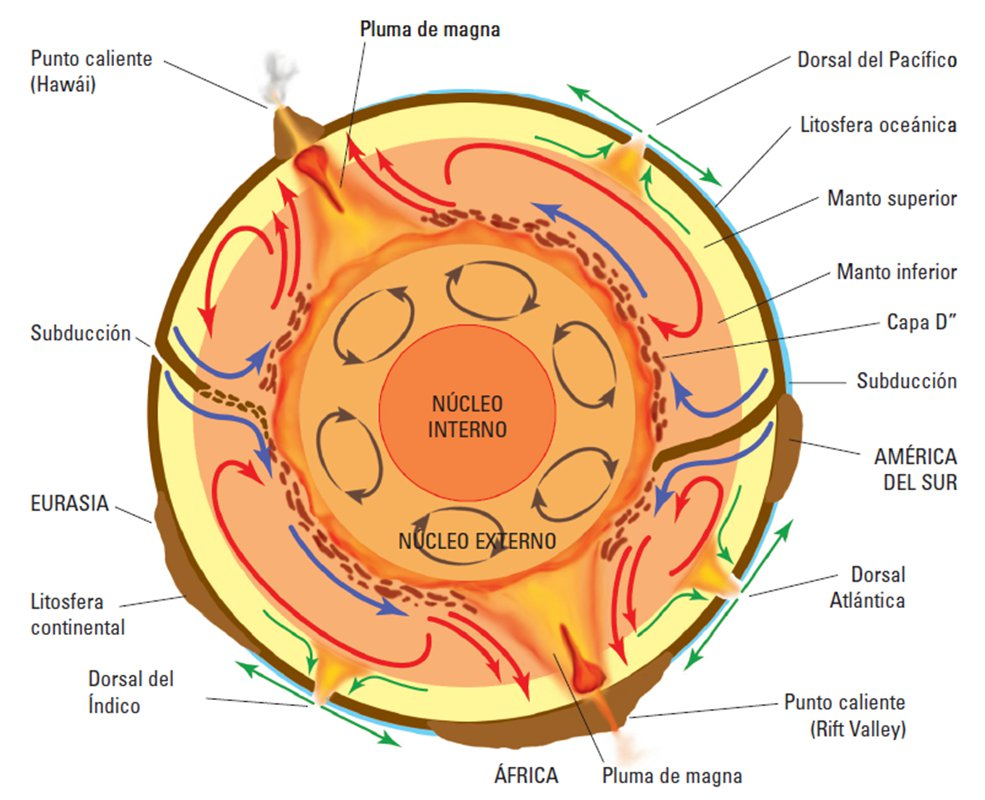
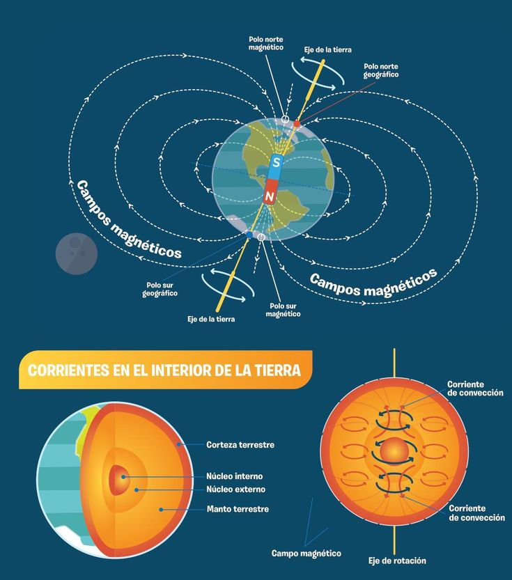
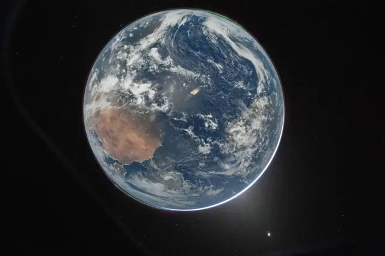

🪨 Corteza
Oxígeno (46.6%), silicio (27.7%) y aluminio (8.1%) dominan. Cortes continental (SIAL) y oceánica (SIMA).
Informe técnico interactivo sobre la composición química de la geosfera: elementos, minerales, procesos y datos físicos que explican nuestro planeta.

La geosfera se compone de tres capas principales con composiciones químicas y propiedades físicas distintas. Esta página recopila los porcentajes, minerales dominantes, procesos geoquímicos, ciclos y datos físicos.
Oxígeno (46.6%), silicio (27.7%) y aluminio (8.1%) dominan. Cortes continental (SIAL) y oceánica (SIMA).
Rico en magnesio y hierro; olivino y piroxeno dominantes; convección térmica genera movimiento tectónico.
Aleación Fe-Ni (80% hierro, 20% níquel); externo líquido genera campo magnético, interno sólido por presión extrema.
Silicatos (cuarzo, feldespato), carbonatos (calcita), óxidos (hematita) y sulfuros (pirita).

Olivino y piroxeno dominan en el manto superior; la zona de transición presenta wadsleyita y ringwoodita; el manto inferior contiene bridgmanita y ferropericlase.


El núcleo es principalmente hierro y níquel; dividido en núcleo externo líquido y núcleo interno sólido; su convección genera el campo magnético terrestre.


Entender la composición de la geosfera no es solo académico: es fundamental para la humanidad, la ciencia, la economía y la supervivencia de nuestra especie.
Entender la geosfera permite a los geólogos predecir terremotos, vulcanismo y movimiento de placas tectónicas. Es fundamental para la exploración de recursos minerales y energéticos.
La corteza terrestre contiene minerales esenciales: oro, plata, cobre, hierro, litio, tierras raras. Conocer su distribución ayuda a la extracción sostenible.
El estudio del manto y su convección explica el movimiento de placas tectónicas, lo que permite modelar zonas de riesgo sísmico y volcánico para proteger poblaciones.
El núcleo externo líquido genera el campo magnético que nos protege de radiación solar y cósmica. Sin él, la vida en la Tierra sería imposible.
Los ciclos geoquímicos (carbono, fósforo) regulan el clima a largo plazo. Entenderlos es clave para modelar cambio climático y sus efectos futuros.
Conocer la estructura de la Tierra permite comparar con otros planetas (Marte, Venus, Luna) y entender la formación del sistema solar.

La geosfera es la base de toda la vida en nuestro planeta
Porque la geosfera es la base de todo. Sin ella:
En resumen: Estudiar la geosfera es estudiar las bases mismas de nuestra existencia.
Formación de rocas ígneas por enfriamiento del magma. Ejemplos: granito, basalto, obsidiana.
Cambio de mineralogía por presión y temperatura. Ejemplos: mármol, gneis, pizarra.
Depósito de materiales por erosión y transporte. Ejemplos: arenisca, caliza, lutita.
Interacción entre geosfera, atmósfera y océanos. Fundamental para la vida.
La geosfera es la parte sólida de la Tierra, compuesta por tres capas principales con composiciones químicas y propiedades físicas distintas. Su estudio no es solo académico: es esencial para comprender nuestro planeta, proteger a la humanidad de desastres naturales, explorar recursos sostenibles y entender el origen de la vida.
Desde la corteza (donde vivimos y extraemos recursos), pasando por el manto (motor de la tectónica de placas), hasta el núcleo (generador del campo magnético que nos protege), cada capa juega un papel crucial en la dinámica terrestre.
📊 Datos clave que debes recordar:
💡 Conclusión poderosa: Entender la geosfera es entender nuestra casa. Es la base de la geología, la minería, la energía, la prevención de desastres y la exploración espacial. Es, en resumen, la base de nuestra existencia como especie. Sin estudiarla, estaríamos ciegos ante los procesos que hacen posible la vida en nuestro planeta.

Nuestro planeta: un sistema complejo donde la geosfera es la base de todo
Incluye tablas descargables, enlaces de referencia, y la bibliografía utilizada para este informe técnico.
Imágenes: Wikimedia Commons